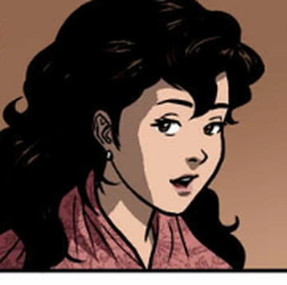
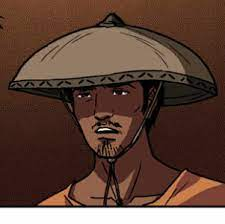
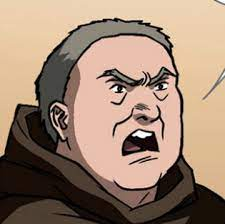
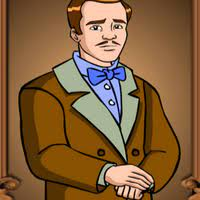
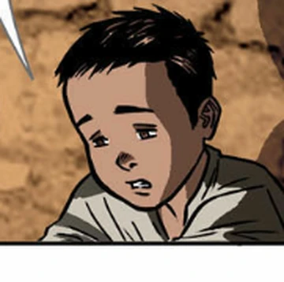
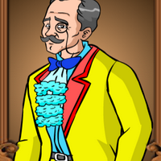
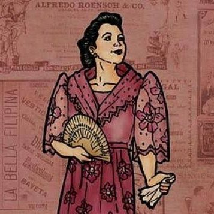
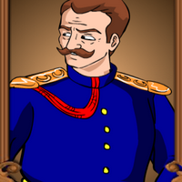

| Character Picture |
Character Name |
Character Description |
 |
Juan Crisostomo Ibarra y Magsalin |
- Juan Crisostomo Ibarra y Magsalin, otherwise known as "Ibarra" is one of the main characters in the book.
- He lives in San Diego but studied in Europe for 7 years.When he returned he found out that his father died he continued his fathers goal of making a school.
|
|  |
Maria Clara de los Santos |
- Maria Clara is one of the main characters in the book. And is the love interest of Crisostomo Ibarra
- She is the adopted daughter of Kapitan Tiago though it is later found out that Padre Damaso is her biological father.
|
|  |
Ellias |
- Ellias is a fugitive living in San Diego who will later on help Ibarra.
|
 |
Santiago de los Santos |
- Santiogo de los Santos otherwise known as "Kapitan Tiago" is an influential businessman in San Diego.
- He is the father of Maria Clara and is the husband of Dona Pia Alba.
|
|  |
Damaso Verdolagas |
- Padre Damaso is one of the Friars in the story and one of the main antagonists in the story.
- He was the Friar in San Diego but was later on moved to a different place after the higher ups found out what he did with Don Rafael's body.
|
 |
Bernardo Salvi |
- He is the town curate of San Diego.
- He is one of the antagonists in the story who contributed to the downfall of Crisostomo Ibarra, manipulating the local people in the process.
|
|  |
Don Rafael Ibarra |
- He is the father of Crisostomo Ibarra
- He was one of the richest men in the town of San Diego.But despite being a kind and generous man he was accused of being a filibuster and heretic by Padre Damaso.
|
 |
Anastacio |
- Pilosopo Tasio,short for Anastacio,was an old man living in San Diego.
- He is an old scholar who studied philosophy and is said to be a lunatic because of his ideas.He also serve's Crisostomo Ibarra as an adviser.
|
 |
Narcisa |
- Sisa is the mother of Crispin and Basillio
- She lives in San Diego with her two son's and husband.She was once a wealthy person but chose Pedro over her riche's. She is described as a beautiful and young woman.
|
|  |
Crispin |
- Crispin is the younger brother of Basillo and one of the sons of Sisa.
- He is an 8 year old boy who is one of the sacristans in the church.He was accused of stealing 32 pesos of gold and was beaten to death by the head sacristan.
|
 |
Basilio |
- Basillio is the older brother of Crispin.
- He was also part of the sacristans alongside his brother Crispin.When Crispin was accused of stealing Basillo was the only one who escaped the church.
|
 |
Donya Victorina de Espadaña |
- Donya Victoriana is the wife of Don Tiburcio
- Along with her husband Don Tiburcio they tried to associate themselves witht the wealthier people and figures of San Diego to earn more social status.
|
|  |
Don Tiburcio de Espadaña |
- He is the husband of Donya Victoriana.
- He is said to be a very good practitioner of medicine because he charges large amounts of money for his service.Despite him charging large amounts of money for his service he has no training as a doctor.
|
|  |
Donya Consolacion |
- She is the wife of the alperes
- Donya Consolacion is the wife of the alperes. She is said to be an old woman Filipina woman who likes to dress and thinks highly of herself.
|
|  |
Alperes |
- The Alperes is the head of the Gwardiya Sibil and is also the husband of Donya Consolacion.
- The Alperes is the rival in power of Padre Salvi that is why they usually fight. The Alperes is also the husband of Donya Consolacion but despite her being his wife the alperes is not happy because he thinks that his wife dresses funny and because she is old.
|
 |
Ces Quesada |
- Tiya Isabel is the cousin of Kapitan Tiago and the Aunt of Maria Clara.
- When Maria Clara's mother died Tiya Isabel was the one who tooke care of her and raised her.
|